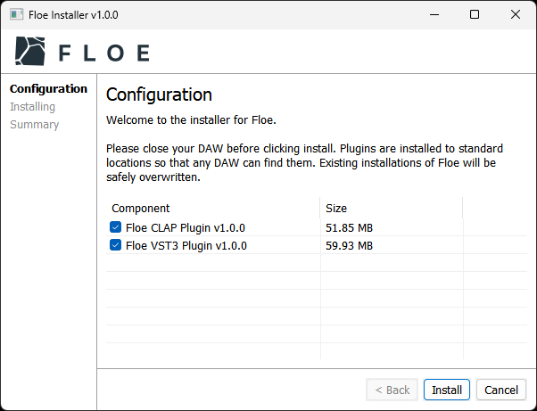

Download & Install Floe
There’s two ways to install Floe: use the installer, or manually move files.
Either way, Floe is backwards-compatible1. This means that you can replace an old version of Floe with a new version and everything will work.
Please check the requirements before downloading.
Additional information:
- Floe is totally free, there’s no signup or account needed; just download and install.
- Sample libraries and presets are installed separately via packages.
- The latest released version of Floe is v1.0.1.
To update Floe, just download and run the latest installer again.
Installer (recommended)


Floe Installer Windows:
Download Floe-Installer-v1.0.1-Windows.zip (48 MB)Floe Installer macOS Apple Silicon2:
Download Floe-Installer-v1.0.1-macOS-Apple-Silicon.zip (52 MB)Floe Installer macOS Intel3:
Download Floe-Installer-v1.0.1-macOS-Intel.zip (54 MB)
Download, unzip, and run the installer program. The installer will guide you through the installation process, including choosing the plugin formats you want to install.
Once the installation is complete you might need to restart your DAW in order for it to find the Floe plugins.
Manually Install (advanced)
Floe Manual Install Windows:
Download Floe-Manual-Install-v1.0.1-Windows.zip (41 MB)Floe Manual Install macOS Apple Silicon2:
Download Floe-Manual-Install-v1.0.1-macOS-Apple-Silicon.zip (52 MB)Floe Manual Install macOS Intel3:
Download Floe-Manual-Install-v1.0.1-macOS-Intel.zip (54 MB)
Normally you’ll want to use the installer, but there could be some cases where you’d prefer to install Floe manually. To allow for this, we provide a zip file that contains Floe’s plugin files. Extract it and move the files to your plugin folders.
Windows:
- CLAP: Move
Floe.clapintoC:\Program Files\Common Files\CLAP - VST3: Move
Floe.vst3intoC:\Program Files\Common Files\VST3
macOS:
- CLAP: Move
Floe.clapinto/Library/Audio/Plug-Ins/CLAP - VST3: Move
Floe.vst3into/Library/Audio/Plug-Ins/VST3 - AU: Move
Floe.componentinto/Library/Audio/Plug-Ins/Components
Download links can also be found on the Github releases page.